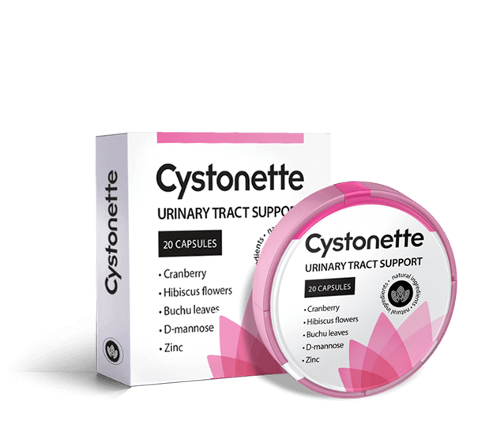

Σύμφωνα με στατιστικά στοιχεία, η κυστίτιδα στις γυναίκες εμφανίζεται σε 75 φορές πιο συχνά, από ότι στους άνδρες. Εάν η ασθένεια δεν θεραπευτεί, τότε αυτή περάνει σε μια χρόνια διαδικασία, η οποία είναι επικίνδυνη και μπορεί να κυλάει σχεδόν ασυμπτωματική. Ο γιατρός ουρολόγος Μανώλης Κοντούλης θα μας πει, ποιες πρώτες βοήθειες χρειάζονται και τι πρέπει να κάνετε για να αποτρέψετε την ασθένεια να περάσει σε μια χρόνια μορφή.

- Γεια σας, κύριε Κοντούλης, πείτε μας, ποια είναι η αιτία εμφάνισης της κυστίτιδας;
– Ο βασικός λόγος - είναι τα βακτήρια που έχουν εισέλθει στην ουροδόχο κύστη. Τις περισσότερες φορές είναι το escherichia coli. Αλλά μπορούν επίσης να προκαλέσουν την ασθένεια και:
- υποθερμία ή το κοινό κρυολόγημα,
- ορμονικές διαταραχές,
- καθιστικός τρόπος ζωής,
- η φλεγμονή των γεννητικών οργάνων,
- η παράλειψη της προσωπικής υγιεινής,
- τραυματισμός (συχνότερα κατά τη σεξουαλική επαφή),
- στρες,
- η κατανάλωση πικάντικου φαγητού και του αλκοόλ.
- Πώς εκδηλώνεται η ασθένεια;
- Κάθε οργανισμός αντιδρά ξεχωριστά στη μόλυνση. Τις περισσότερες φορές, η οξεία κυστίτιδα συνοδεύεται από επώδυνη ούρηση, με τον οξύ πόνο στην κάτω κοιλιακή χώρα και την αύξηση θερμοκρασίας του σώματος. Μπορεί να υπάρχει θολό ίζημα ή αίμα μέσα στα ούρα. Αλλά μην ξεχνάτε και για την κρυφή μορφή κυστίτιδας.
– Εάν η ασθένεια υπάρχει σε κρυφή μορφή, τότε πώς να ξέρω, ότι είμαι άρρωστος;
- Αυτός είναι και ο κίνδυνος κυστίτιδας. Η φλεγμονώδης διαδικασία μπορεί να φανεί μόνο με πρόσθετες μελέτες: με την λεπτομερή εξέταση αίματος και την κυστεοσκόπηση.
- Εάν η κυστίτιδα δεν ενοχλεί, τότε ίσως δεν χρειάζεται να την θεραπεύσουμε και θα εξαφανιστεί από μόνη της;
– Σε περίπτωση μιας καθυστερημένης θεραπείας, η κυστίτιδα περνάει σε μια χρόνια μορφή, η οποία οδηγεί σε πολλές συνέπειες και επιπλοκές.
- Ποιες είναι ακριβώς;
- Η κυστίτιδα επηρεάζει τα νεφρά και άλλα όργανα του ουροποιητικού συστήματος και μπορεί να γίνει η αιτία της ανάπτυξης:
- υπογονιμότητας,
- φλεγμονής των αποφύσεων,
- αποστημάτων νεφρών,
- νεφρικής ανεπάρκειας,
- παρασιτίτιδας,
- πυελονεφρίτιδας,
- τριγωνίτιδας,
- κυσταλγίας,
- κυστεοουρητηρικής παλινδρόμησης.

– Πώς μπορείτε να βοηθήσετε σε τέτοιες περιπτώσεις;
- Η θεραπεία της κυστίτιδας πρέπει να είναι ολοκληρωμένη. Οι ασθενείς έρχονται συχνά για επίσκεψη σε εμένα, που ενεργούν σύμφωνα με το παρακάτω σχήμα: αρρωσταίνουν, πίνουν ένα αντιβιοτικό και μετά συνεχίζουν σε έναν φαύλο κύκλο. Αυτό είναι στην ρίζα του ένα λάθος. Εάν μετά από λίγο χρόνο εμφανίζονται συμπτώματα κυστίτιδας από τα αντιβιοτικά, τότε η ασθένεια δεν έχει θεραπευτεί. Επίσης, πολλοί παραμελούν την υγεία τους και δεν πίνουν φάρμακα μέχρι το τέλος. Εάν αισθάνεστε καλύτερα, αυτό δεν σημαίνει ότι είστε υγιείς. Πρέπει να υποβληθείτε σε πλήρη αγωγή θεραπείας, για να αναπτύξει ο οργανισμός σας τα αντισώματα κατά των βακτηρίων-παθογόνων.
– Από τι αποτελείται μια ολοκληρωμένη θεραπεία;
- Ένας υγιεινός τρόπος ζωής είναι πολύ σημαντικός: πρέπει να αποφύγετε την υποθερμία, να διακόψετε τη σεξουαλική σας ζωή για κάποιο χρονικό διάστημα κατά τη διάρκεια της ασθένειας, να μην καταναλώνετε το αλκοόλ και τα μπαχαρικά. Η θεραπεία πρέπει να στοχεύει στην απαλλαγή του παθογόνου το συντομότερο δυνατό, την εξάλειψη των συμπτωμάτων και την πρόληψη της υποτροπής της νόσου. Για να αποφευχθεί η εμφάνιση υποτροπών ασθένειας, για την μείωση της σοβαρότητας των φλεγμονών φαινομένων και των πόνων, για την ομαλοποίηση της ούρησης, χρησιμοποιούνται ενεργά τα φυτοπαρασκευάσματα. Στην πρακτική μου, χρησιμοποιώ το . Αυτό το σκεύασμα θεωρείται το πιο αποτελεσματικό.

– Πείτε μας περισσότερα για αυτήν τη μέθοδο θεραπείας.
- Το σκεύασμα έχει μια φυσική βάση και στο 98% των περιπτώσεων αφαιρεί τα συμπτώματα της κυστίτιδας χωρίς τη βοήθεια αντιβιοτικών. Έχει αντιβακτηριακή, αντιφλεγμονώδη και αντισπασμωδική δράση. σε σύντομο χρονικό διάστημα ανακουφίζει από τη μόλυνση, εξαλείφει τον οξύ πόνο και ομαλοποιεί την ούρηση. Μια σημαντική διαφορά από άλλα φυτικά σκευάσματα είναι, ότι έχει μια κατευθυνόμενη δράση, αποτρέπει υποτροπές και βοηθάει στον οργανισμό να ενισχύσει το ανοσοποιητικό σύστημα του.
- Αυτό το σκεύασμα βοηθάει στην οξεία και χρόνια κυστίτιδα;
– Το σκεύασμα ανακουφίζει από τη φλεγμονή της ουροδόχου κύστης όπως σε οξείες και έτσι σε χρόνιες μορφές. Η διαφορά είναι, ότι στην οξεία, δεν αφήνει την ασθένεια να περάσει σε χρόνια μορφή. Σε περίπτωση χρόνιας – θα μειώσει τις υποτροπές κατά 95%.
- Πόσος χρόνος χρειάζεται για να γίνει λήψη του σκευάσματος για τη θεραπεία της κυστίτιδας;
- Το σκεύασμα λαμβάνεται με μια αγωγή θεραπείας. Μέσα σε 28 ημέρες, όχι μόνο τα συμπτώματα περνούν, αλλά και η μικροχλωρίδα αποκαθίσταται και δημιουργείται ένα προστατευτικό στρώμα, που εμποδίζει εκ νέου είσοδο των βακτηρίων. Δηλαδή, σε ένα άτομο που έχει αναρρώσει δημιουργείται την προστασία και ενισχύεται η ασυλία. Για να αρρωστήσει ξανά, πρέπει να προσπαθεί πολύ.
– Ευχαριστώ πολύ γιατρέ Κοντούλη για τις χρήσιμες πληροφορίες, σχετικά με τον τρόπο σωστής θεραπείας της κυστίτιδας. Νομίζω, ότι είναι υπέροχο που τώρα μπορείτε να μην πίνετε αντιβιοτικά, αλλά να κάνετε θεραπεία με την βοήθεια των φυσικών σκευασμάτων.
- Σας ευχαριστώ για την πρόσκληση. Θέλω να πω, ότι σήμερα οι γιατροί απορρίπτουνε την χορήγηση των συνθετικών φαρμάκων υπέρ των φυσικών. Είναι λιγότερο επικίνδυνα για τα εσωτερικά όργανα και την ανθρώπινη ανοσία και καταπολεμούν στο ιδιό επίπεδο τη βακτηριακή λοίμωξη. Το ακόμη είναι το μοναδικό φυσικό σκεύασμα μέχρι στιγμής που σταματά την ανάπτυξη βακτηρίων και επιτρέπει στους φυσικούς αμυντικούς μηχανισμούς να τα εξαλείψουνε.
Εξακολουθείτε να έχετε ερωτήσεις; Ρωτήστε τον ειδικό στην ιστοσελίδα του κατασκευαστή.